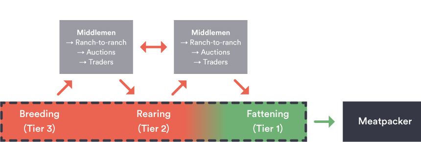
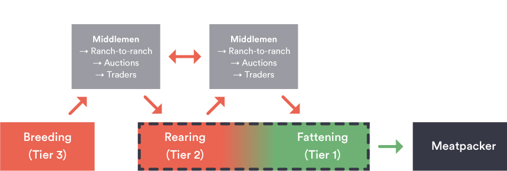
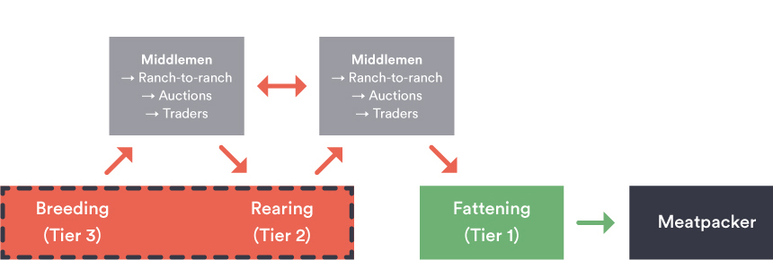

Fornecedores Diretos e Indiretos: Um exemplo de uma Cadeia Produtiva de Pecuária de Corte Brasileira (sob monitoramento do G4)
A cadeia produtiva da pecuária de corte no Brasil é constituída por uma complexa rede de produtores, distribuídos por diversos segmentos com combinações das três principais fases de produção: (1) cria (2) recria e (3) engorda.
Fases da Produção
- Engorda (terminação)
- Fase final da produção correspondendo à terminação dos animais.
- Fornecedores diretos (Fazendas Categoria 1) que vendem gado gordo para os frigoríficos.
- Monitoramento e rastreabilidade podem controlar de forma mais eficaz o gado terminado nessas propriedades.
- Recria
- Fase intermediária que vai do desmame ao início da fase de engorda ou entrada em reprodução.
- Fornecedores indiretos (Fazendas Categoria 2) que vendem gado magro para fazendas de engorda. Transferências entre fazendas de recria também podem ocorrer.
- Monitoramento e rastreabilidade atualmente limitados nessas propriedades (quando existentes).
- Cria
- Fase de produção de bezerros, compreendendo a reprodução, desmame e pós-desmame.
- Fornecedores indiretos (Fazendas Categoria 3) que vendem para fazendas de recria ou outras fases. Transferências entre fazendas de cria também podem ocorrer.
- Monitoramento e rastreabilidade atualmente limitados dessas propriedades (quando existentes).
Cadeias Produtivas de Pecuária de Corte
O monitoramento e rastreabilidade pode ser desafiador para sistemas de pecuária de corte. As fazendas podem realizar diversas fases (e combinações de fases) do ciclo de produção, e consequentemente os animais serem movimentados entre diversas fazendas. Transferências e movimentações de animais podem ocorrer em todas as fases do ciclo de produção, incluindo transferências entre fazendas (em operações formais e informais), leilões, comerciantes de gado e outros intermediários. Isso cria desafios para a rastreabilidade e monitoramento, especialmente para fornecedores Categoria 2 e Categoria 3. O apoio a esforços direcionados aos fornecedores indiretos (Fazendas Categoria 2 e Categoria 3) podem ajudar a preencher algumas das lacunas atuais no monitoramento, reduzir riscos de reputação de desmatamento e atividades ilegais, e ajudar a garantir uma cadeia produtiva da pecuária e seus produtos com desmatamento zero comprovado.
Os seguintes exemplos da cadeia produtiva ajudam a ilustrar as várias combinações de sistemas de produção e as complexidades envolvidas com o monitoramento e rastreabilidade.

Exemplo 1: Sistema de Produção de Ciclo Completo (Cria-Recria-Engorda)
Fazendas de ciclo completo realizam todas as fases do ciclo de produção (cria, recria e engorda). Comparadas com sistemas que realizam apenas parte do ciclo, as fazendas de ciclo completo (ou sistemas de produção de agregados) oferecem maior cobertura para monitoramento e rastreabilidade. No entanto, mesmo fazendas de ciclo completo compram e vendem animais em diferentes fases do ciclo, e as propriedades com quem elas negociam podem não necessariamente estar cobertas por sistemas de monitoramento e rastreabilidade.

Exemplo 2: Sistema de Produção de Ciclo Parcial (Cria-Recria)

Sistemas de ciclo parcial realizam combinações das fases da produção (neste exemplo a cria e recria). Nesta estrutura da cadeia de abastecimento, o gado é movimentado entre várias combinações de fases de produção. Além disso, transferências e movimentações de animais podem ocorrer entre essas fases do ciclo de produção, incluindo transferências entre fazendas (em operações formais e informais), leilões, comerciantes de gado e outros intermediários. Estes sistemas de produção desagregados, impõem desafios significativos para o monitoramento e rastreabilidade em toda a cadeia produtiva.
Exemplo 3: Sistema de Produção de Ciclo Parcial (Recria-Engorda)
Os sistemas com ciclos parciais cobrem as combinações das fases de produção (neste exemplo, cria e engorda). Nesta estrutura de cadeia de abastecimento, o gado deve se movimentar entre as várias combinações das fases de produção. Além disso, as transferências e a movimentações do gado podem ocorrer entre as fases do ciclo produtivo, incluindo transferências entre fazendas (em transações formais e informais), leilões, através de negociantes e outros intermediários. Esses sistemas de produção desagregados oferecem desafios ao monitoramento e à rastreabilidade em toda a cadeia de abastecimento.
Exemplo 4: Sistema de Produção Ciclo Parcial (Fase Única)
Sistemas de produção de ciclo parcial, em fazendas que realizam apenas uma fase do ciclo, representam os maiores desafios para o monitoramento e rastreabilidade. Nesta estrutura da cadeia produtiva, os animais devem ser movimentados entre cada uma das fases do ciclo de produção. Além disso, transferências e movimentações de animais podem ocorrer entre essas fases do ciclo de produção, incluindo transferências entre fazendas (em operações formais e informais), leilões, comerciantes de gado e outros intermediários. Estes sistemas de produção desagregados, impõem desafios significativos para o monitoramento e rastreabilidade em toda a cadeia produtiva.